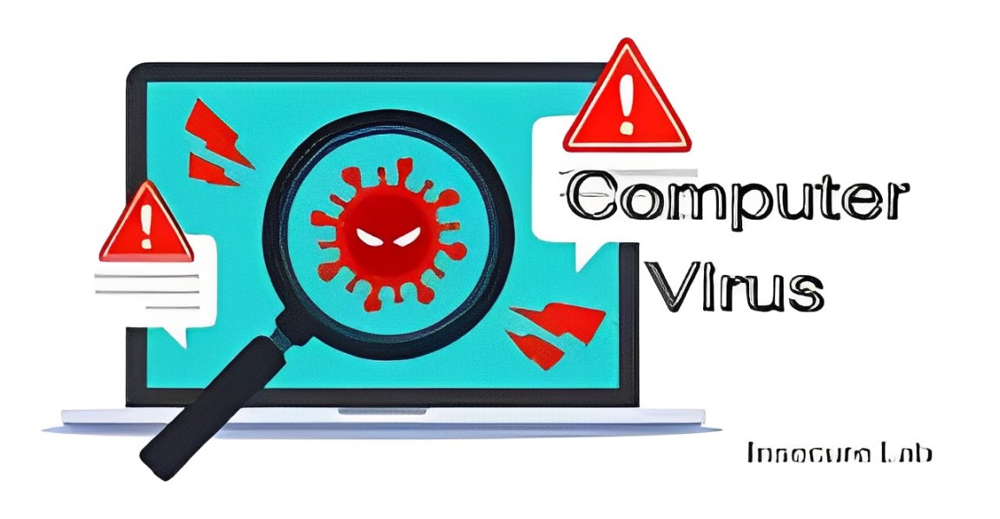

UNDERSTANDING THE THREAT: THE IMPACT OF VIRUSES, SPAM, MALWARE, AND ANTIVIRUS SOFTWARE ON YOUR ONLINE SAFETY
INTRODUCTION
Since the dawn of the 21st century, computers have become an integral part of our lives, transforming the way we work, communicate, and learn. However, this digital revolution has also brought with it a new breed of threats: computer viruses. These malicious programs can wreak havoc on our devices, stealing sensitive information, disrupting our work, and even causing permanent damage.
WHAT ARE COMPUTER VIRUSES?
A computer virus is a type of malware that replicates itself and spreads to other computers, often causing damage or disruption along the way. Think of it like a biological virus, but instead of infecting cells, it infects computer files.
HOW DO COMPUTER VIRUSES SPREAD?
In the early days of computing, viruses spread primarily through floppy disks. Today, however, they are more likely to be transmitted through the internet, often via email attachments, infected software downloads, or compromised websites.
PROTECTING YOUR COMPUTER FROM VIRUSES
The best way to protect your computer from viruses is to take a proactive approach to security. Here are some essential tips:
- Use a trusted antivirus product: Antivirus software is designed to detect and remove viruses from your computer. Make sure to keep your antivirus software up-to-date with the latest virus definitions.
- Avoid clicking on suspicious links or opening attachments from unknown senders: Many viruses are spread through email attachments or links to infected websites. Be cautious about what you click on and what you open.
- Back up your data regularly In the event that your computer is infected with a virus, having a backup of your data can help you recover your files.
MALWARE
Malware is any kind of program that tries to harm a computer system. It is a combination of the words "malicious" and "software." Malware comes in many forms.
- Ransomware encrypts files on a victim’s computer and demands payment for their release.
- Spyware secretly monitors user activity and collects personal information without consent.
- Adware displays unwanted advertisements on the user’s device.
There are many other types of malware as well, such as viruses, rootkits, keyloggers, trojans, fileless malware, ransomware, and bots. A good cybersecurity program can help detect, remove, and defend against any malware that might make its way onto a computer. Additionally, good habits like avoiding suspicious sites or links can prevent malware entirely.
SPAM
- Spam can be defined as any sort of unwanted junk mail or unsolicited advertising, and it is primarily seen in unsolicited emails and online advertisements.
- Spam is a major problem for both businesses and individuals, leading to decreased productivity, technological issues, and even fraud or identity theft.
ANTIVIRUSES
Antivirus software (antivirus program) is a security program designed to prevent, detect, search, and remove viruses and other types of malware from computers, networks, and other devices. Often included as part of a security package, antivirus software can also be purchased as a standalone option.
Antivirus software usually performs the following basic functions:
- Enables users to schedule scans so they run automatically.
- Let users initiate new scans at any time.
- Removes any malicious software it detects either automatically in the background or notifies users of infections and prompts them to clean the file